Одним из самых распространённых манипуляторов в мире современных
персональных компьютеров безусловно является устройство, получившие
название «мышь». Это небольшое приспособление, полностью
оправдывающее своим внешним видом данное ему имя: маленький,
округлый корпус и хвостик соединительного провода, тянущийся к
компьютеру.
Компьютерная мышь –
механическое устройство, манипулятор, трансформирующий движение в
управляющий сигнал с целью управления курсором посредством отдачи
различных команд.
Устройство мыши передаёт в систему информацию о своём перемещении по
поверхности и нажатии кнопок.
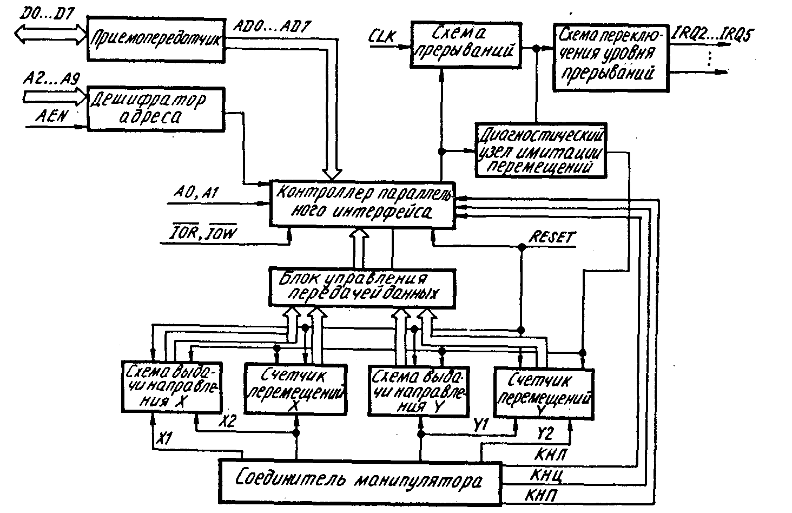
Схема 1 - Структурная схема манипулятора типа «мышь»
Несмотря на внешнее разнообразие, все мыши работают одинаково.
Основными компонентами устройства мыши являются:
Корпус
Устройство регистрации перемещения мыши
Микроконтроллер
Интерфейс
В настоящее время существуют следующие принципы регистрации
положения мыши:
Механический
Оптико-механический
Оптический
Оптосенсорный (Оптический 2-го поколения)
Лазерный
Индукционный
Корпус мыши сделан из пластмассы. В верхней части корпуса, под
пальцами, располагаются кнопки. Количество кнопок может быть разным,
обычно две или три. Для работы дополнительных кнопок нужны
специальные программы.
История
Когда-то компьютер управлялся исключительно с помощью текстовых
команд, которые вводились в коммандную строку через клавиатуру. Так
продолжалось до 1980-х годов, несмотря на то, что ещё в 1963 году
инжер
Дуглас Энгельбарт
начал работу над манипулятором для указания объектов на экране.
Первоначально название своей разработке являлось указатель
XY-координат для дисплея. В том же году по наработкам Энгельбарта
его коллега Билл Инглиш создал первый прототип устройства:
деревянную коробку с кнопкой сверху и двумя перпендикулярными
металлическими колёсиками внутри для индикации на дисплее положения
по горизонтали и вертикали.
Наклоняя устройство, можно было управлять колёсиками отдельно, чтобы
провести указатель точно по оси X или Y. 9 декабря 1968 году
Энгельбарт публично представил манипулятор на показе интерактивных
устройств в Калифорнии, а
патент
на этот гаджет он получил в 1970 году.
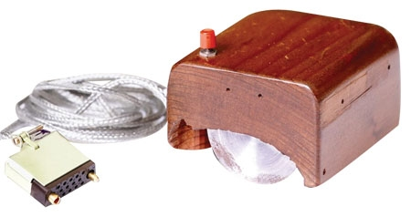
Рис. 1 - Первая компьютерная мышь
Только в 1973 году был представлен компьютер ALTO компанией Xerox.
Xerox ALTO управлялся с помощью клавиатуры и трёхкнопочной мыши.
Стоимость мыши в те времена составляла 400 долларов США.
Металлические колёсики для изменения позиции курсора были заменены
на металлический шарик и ролики. До 90-х годов основной принцип
работы существенно не менялся.
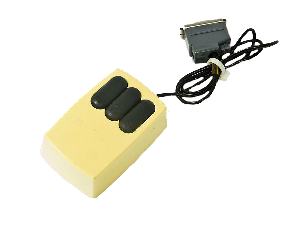
Рис. 2 - Мышь, идущая в комплекте с компьютером ALTO
С первых дней своего существования мышь массово не использовалась. В
1983 году компания Apple выпустила свою собственную однокнопучную
мышь для компьютера Lisa, стоимость которой уменьшилась до 25
долларов США Широкую популярность она стала приобретать только с
выходом в 1984 году компьютера Apple Macintosh 128k.
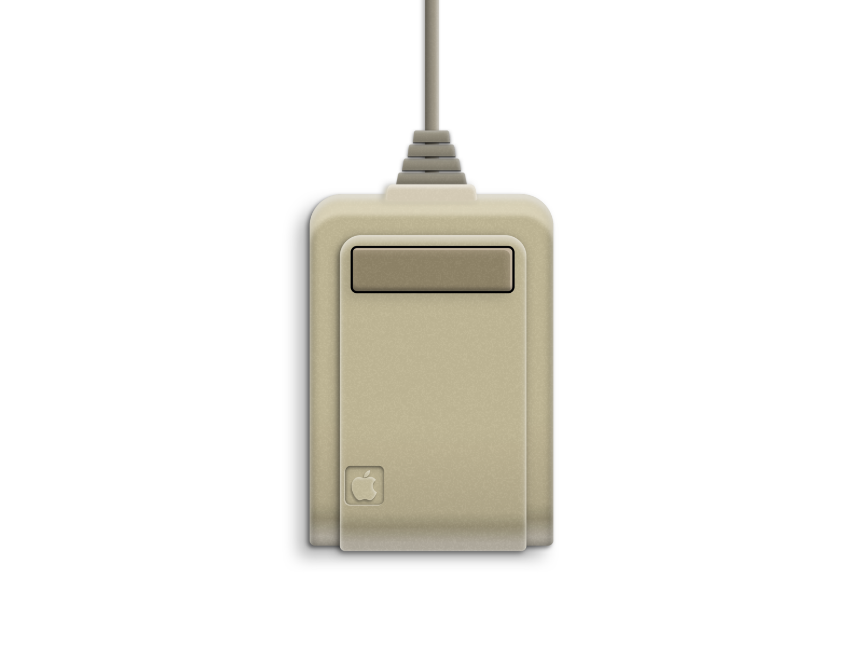
Рис 3. - Первая мышь, выпущенная компанией Apple
В рекламном ролике говорилось: «Если вы можете указывать на что-то,
то можете управлять системой». Стив Джобс, как и в случае со
смартфонами и планшетами, не изобрёл мышь, но продуманный маркетинг
и удобный дизайн стали причиной её успеха. В 1985 году для Windows
1.0 свои мыши стала выпускать Microsoft, после чего с каждым годом
внешний вид мыши приближался к современному.
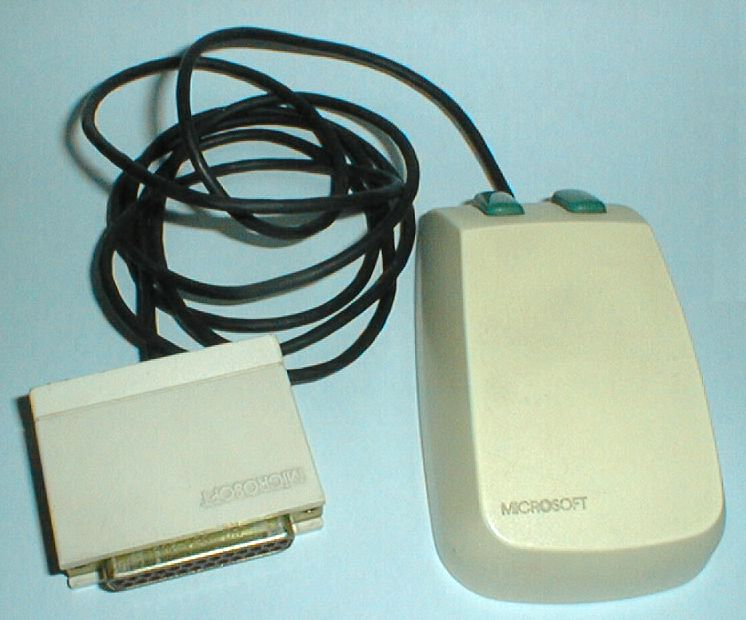
Рис 4. - Компьютерная мышь, выпускаемая Microsoft
Такими, какими мы привыкли видеть мыши в наши дни, они стали
благодаря двум компаниям - Agilent Technologies разработавшей
технологию оптических CMOS-фотосенсоров и Microsoft, на основе этой
технологии в 1999 году выпустившей первую коммерческую оптическую
мышь.
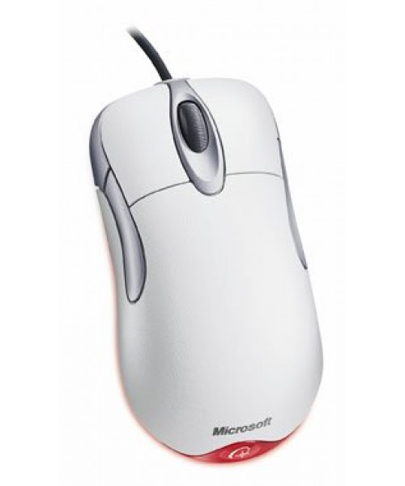
В какой-то момент оптико-механические мыши начали уступать позиции
оптическим, сенсор которых фотографировал поверхность, подсвеченную
красным светодиодом. Для повышения точности некоторые мыши
оснащались сразу двумя сенсорами. Оптические мыши не требовали
чистки, работали на большем количестве поверхностей, хотя и не на
всех. Например, оптические мышки с трудом переносили некоторые типы
ковриков, а также прозрачные и, конечно, зеркальные поверхности.
Прошло совсем немного времени с момента появления первой оптической,
и в 2004 году на рынок вышла первая "лазерная" мышка.
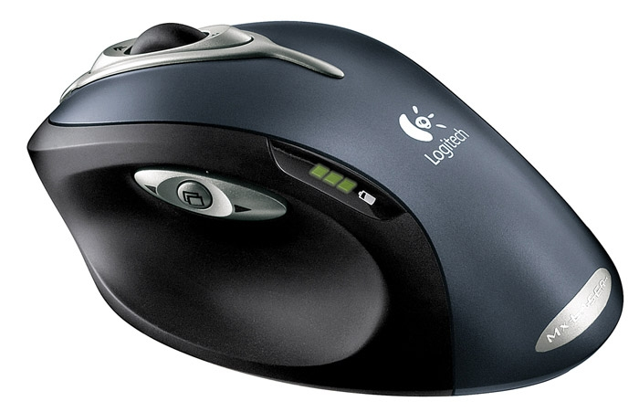Она обеспечивала в разы большую чувствительность и позволяла
манипулятору работать даже на стеклянных и зеркальных поверхностях,
потребляя при этом мало энергии и не требуя подсветки. Беспроводные
мыши дали людям большую свободу перемещений во время работы.
Типы компьютерных мышек
Мышь механическая
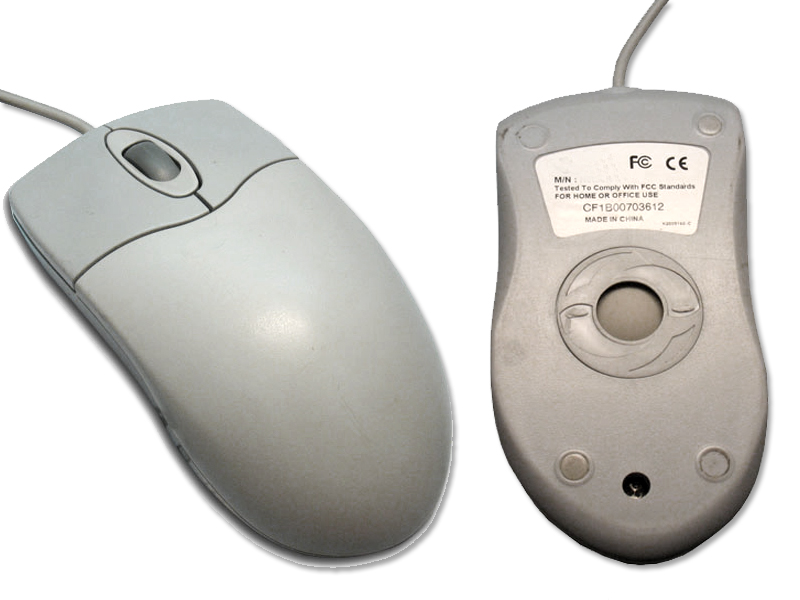
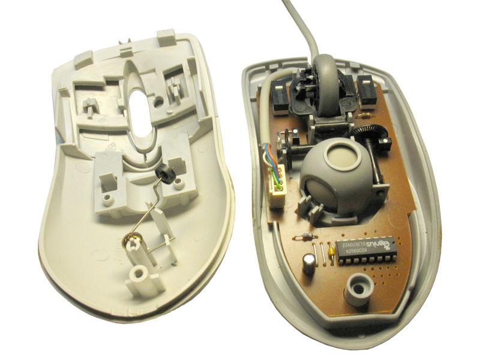
Рис. 5 и 6 - Конструкция механической мыши
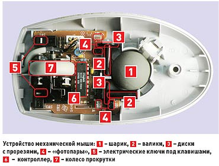
Механическая мышь обустроена шариковым приводом
(Патент), где движение мыши передаётся на выступающий из корпуса
обрезиненный стальной шарик. Его вес и резиновое покрытие
обеспечивает хорошее сцепление с рабочей поверхностью. Два
прижатых к шарику ролика снимают его движения по каждому из
измерений и передают их на датчики угла поворота (инкрементальные
энкодеры), преобразующие эти движения в электрические сигналы.
Основной недостаток шарикового привода – загрязнение шарика и
снимающих роликов, приводящее к заеданию мыши и необходимости в
периодической её чистке. Несмотря на недостатки, шаровой привод
долгое время доминировал, успешно конкурируя с альтернативными
схемами датчиков.
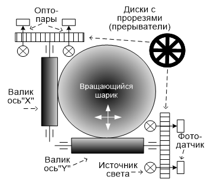
Схема 2 - Принцип действия оптомеханической мыши
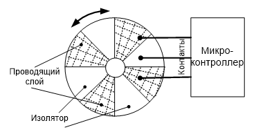
Схема 3 - Принцип работы прерывателя мыши
Существует два варианта датчиков для шарового привода:
Контактный энкодер
Контактный датчик представляет собой диск с электрическими
контактами (фольгированный материал, на котором сделаны
насечки). Неподвижно закреплены 3 электрических клеммы. При
вращении валиков клеммы последовательно замыкаются-размыкаются.
Основными недостатками контанктных датчиков является окисление
контактов, быстрый износ и невысокая точность. Поэтому со
временам все мыши перешли на бесконтактные оптопарные датчики.
Оптический энкодер
Оптический датчик состоит из двойной оптопары – светодиода и
двух фотодиодов и диска с отверстиями или лучевидными прорезями,
перекрывающего световой поток по мере вращения. При перемещении
мыши диск вращается, и с фотодиодов снимается сигнал с частотой,
соответствующей скорости перемещения мыши. Разница фаз засветки
между двумя фотодиодами определяет направление вращения. Такие
датчики получили наибольшее распространение.
Мышь оптическая
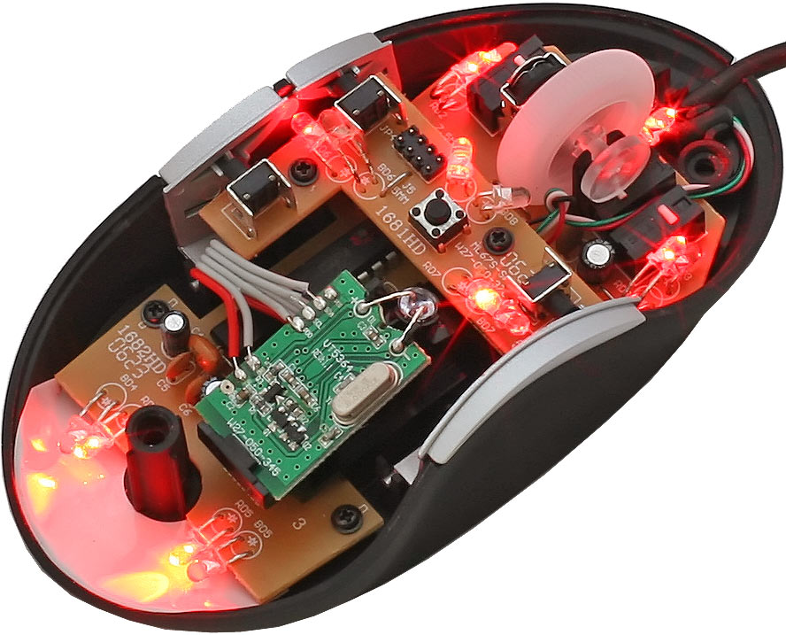
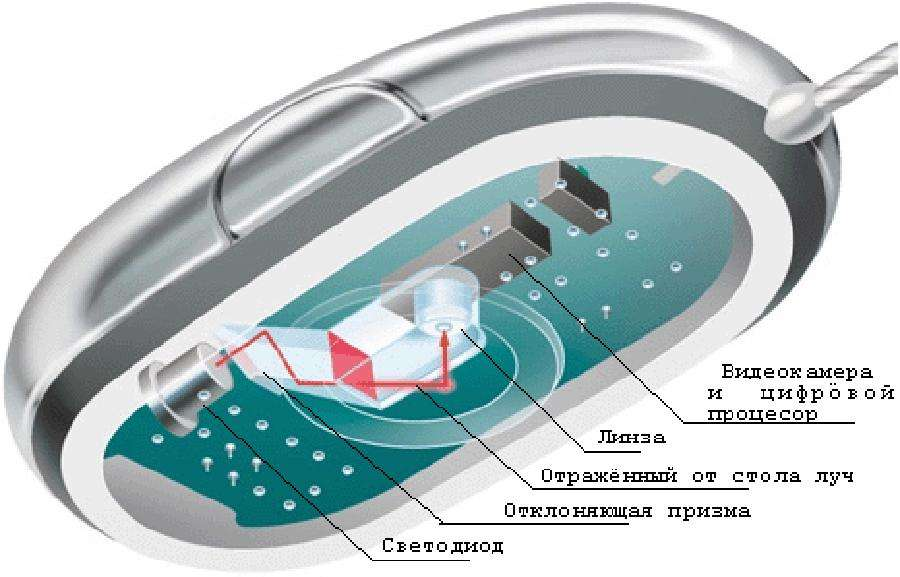
Рис 7 и 8 - Конструкция оптической мыши.
Оптические датчики
(Патент)
призваны непосредственно отслеживать перемещение рабочей
поверхности относительно мыши. Исключение механической
составляющей обеспечивало более высокую надёжность и позволяло
увеличить разрешающую способность детектора.
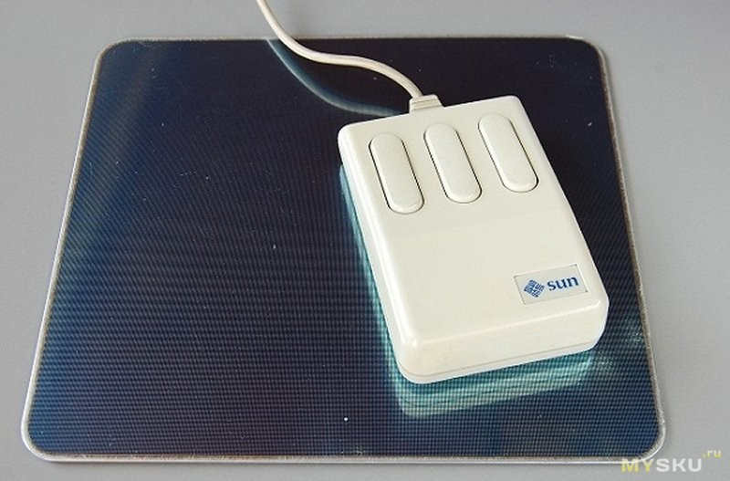
Первое поколение оптических
датчиков было представлено различными схемами оптопарных датчиков
с непрямой оптической связью – светоизлучающих и воспринимающих
отражение от рабочей поверхности светочувствительных диодов. Такие
датчики имели одно общее свойство – они требовали на рабочей
поверхности (таких как коврик) специальную координатную сетку.
Координатная сетка может быть разной ширины с различным
количеством и цветом (к примеру red + green или blue+yellow. В
этом случае фотоприёмники должны реагировать на вполне
определённую длину волны оптического излучения) линий. Источник
излучения направляет луч света на рабочую поверхность и отраденный
от сетки луч попадает на фотоприёмник, связанный с
микропроцессором. Различное число штрихов в сетке по направлениям
X и Y упрощает распознавание направления. Микропроцессор
определяет относительное перемещение манипулятора в
соответствующее положение курсора на экране дисплея и передаёт
информацию в ПЭВМ.
Недостатками таких датчиков обычно называют:
Необходимость использования специального коврика и
невозможностью его замены другим. Кроме всего прочего, коврики
разных оптических мышей часто не были взаимозаменяемыми и не
выпускались отдельно.
Необходимость определённой ориентации мыши относительно коврика,
в противном случае мышь работала неправильно.
Чувствительность мыши к загрязнению коврика (ведь он
соприкасается с рукой пользователя) – датчик неуверенно
воспринимал штриховку на загрязнённых местах коврика.
Высокую стоимость устройства.
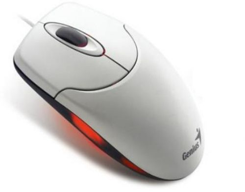
Второе поколение оптических
мышей (Оптосенсорных) имеет более сложное устройство. В ничней
части мыши установлена силиконовая КМОП-камера (оптический
сенсор), способная производить от 1500 до 7500 снимков поверхности
в секунду. Эта последовательность снимков «пропускается» через
достаточно мощный цифровой сигнальный процессор (DSP), который
сравнивает текущий и предыдущий снимки. Специальная контрастная
подсветка поверхнсти светодиодом или лазером облегчает работу
камеры.
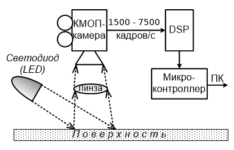
Схема 4 - Работа оптосенсорной мыши
Оптические мыши второго поколения имели огромное преимущество
перед первыми: они не требуют координатный коврик и работабт
практически на любой поверхности, кроме зеркальных, прозрачных или
материи с точно повторяющейся рельефной структурой.
Мышь лазерная
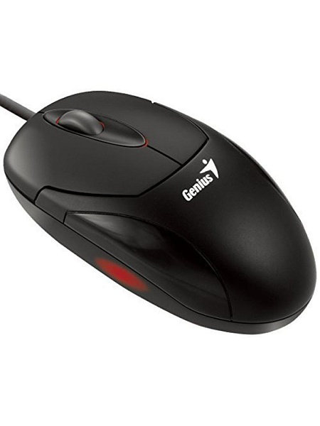
Рисунок 9 - Лазерная мышь
Лазерная мышь внешне не отличается от оптической (второго
поколения), однако вместо светодиода и сенсора в ней используется
лазер. Это позволяет значительно увеличить её точность и снизить
энергопотребление.
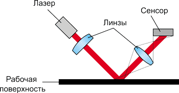
Схема 5 - устройство лазерного сенсора
Источником света служит не светодиод, а полупроводниковый лазер,
который работает в невидимом для человеческого глаза инфракрасном
диапазоне (длина волны — 832-852 нм), так что привычного свечения
под корпусом работающего манипулятора в данном случае нет.
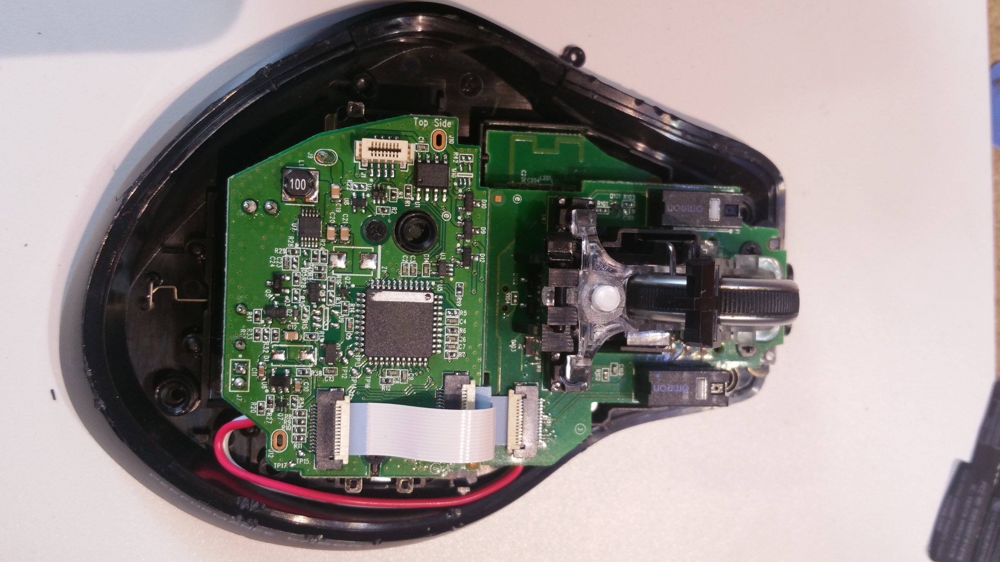
Рисунок 10 - Лазерная мышь в разобранном состоянии
Основное преимущество лазера заключается в том, что излучаемый им
свет имеет когерентную природу — это позволяет получить гораздо
более контрастное и детальное изображение поверхности, а также
оптическая ось объектива видеокамеры расположена под таким же
углом, под каким свет от источника падает на рабочую поверхность.
Таким образом, видеокамера лазерного сенсора считывает не
рассеянный, а отраженный от поверхности свет.
Лазерный сенсор позволил:
обеспечить стабильную работу датчика на гладких поверхностях,
имеющих очень слабо выраженный микрорельеф — то есть там, где
оптические датчики традиционной конструкции ведут себя
нестабильно или вовсе перестают функционировать;
значительно повысить разрешающую способность сенсора (и
соответственно, точность регистрации перемещений.
Мышь индукционная
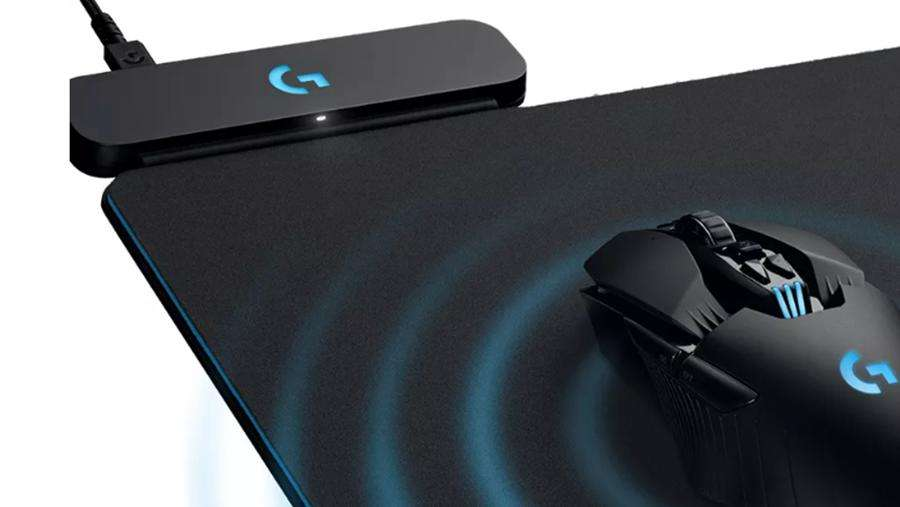
Рисунок 11 - Мышь индукционная
Индукционная мышь по своему строению мало чем отличается от
обыкновенной беспроводной оптической мыши, кроме отсутствия
элементов питания в составе корпуса.
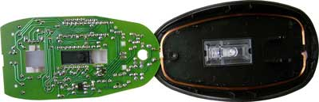
Рисунок 12 - Мышь индукционная в разобранном состоянии
Отличительной же особенностью является необычная для такого
радио-устройства антенна. Она выполнена проводом очень небольшого
сечения в виде рамки состоящей из множества витков. Обычно,
антенны в радио мышках состоят из одного неполного витка гораздо
большего сечения, либо вытравливаются непосредственно на самой
печатной плате устройства.
Индукционные мыши имеют хорошую точность, и их не нужно правильно
ориентировать. Индукционная мышь может быть «беспроводной» (к
компьютеру подключается коврик, на котором она работает), и иметь
индукционное питание, следовательно, не требовать аккумуляторов,
как обычные беспроводные мыши.
Индукционные мыши редки, дороги и не всегда удобны. Мышь для
индукционного коврика практически невозможно поменять на другую
(например, больше подходящую по руке, и т.п.).
Интерфейсы
Шинный интерфейс
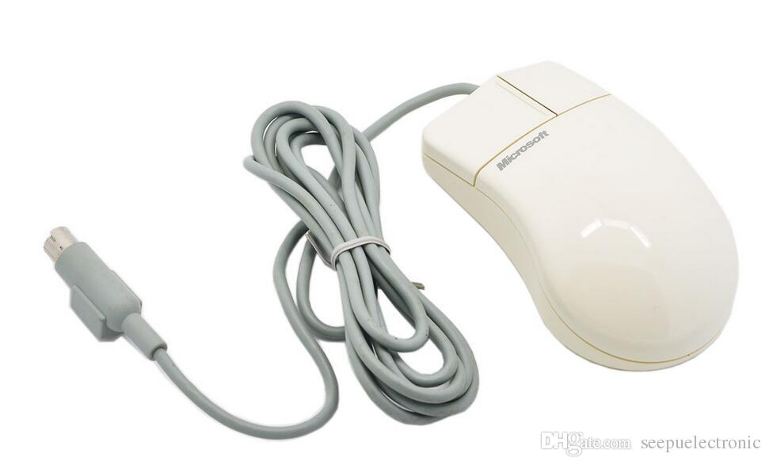
Шинный интерфейс (Bus Mouse) – вариант, применявшийся в первых
мышах, которые используют системный интерфейс. Здесь мышь содержит
только датчики и кнопки, а обработка их сигналов производится на
специальной плате адаптера (обычно 8-разрядная ISA). Адаптер
устанавливается в свободный слот системной шины, занимает адреса
ввода/вывода и линию запроса прерывания, что является главным
недостатком данной мыши, и в тыльную часть адаптера подключается
мышь при помощи специального 9-контактного разъёма. Сигнал от мыши
поступает непосредственно через шину и не связан с COM-портами и
прерываниями.
Рисунок 13 и Таблица 1 - Разъем Bus Mouse
Контакт
Сигналы Bus Mouse
1
Vcc+5 B
2
Xa – датчик X
3
Xb – датчик X
4
Ya – датчик Y
5
Yb – датчик Y
6
Lb – левая кнопка
7
Mb – средняя кнопка
8
Rb – правая кнопка
9
GND
Последовательный интерфейс
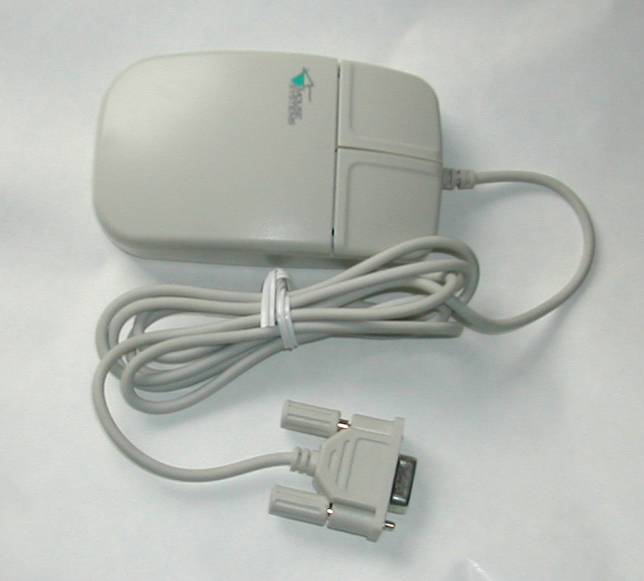
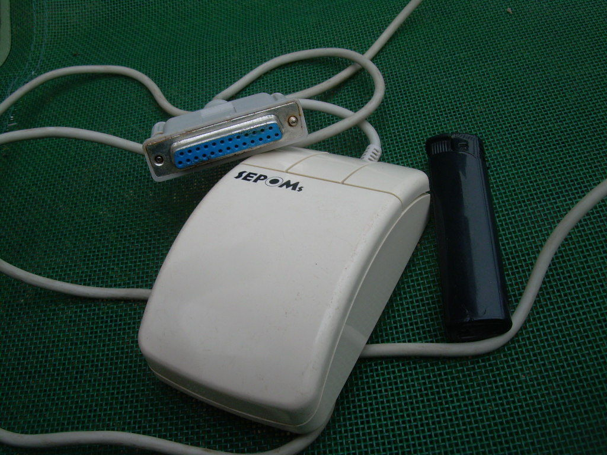
Рисунок 14 и 15 - Последовательные интерфейсы Db9 и Db25
Serial Mouse – мышь с последовательным интерфейсом, подключаемая
через разъём типа DB-9 или DB-25 COM-порта. В некоторых случаях в
комплекте с мышкой поставляется и переходное устройство с DB-9 на
DB-25, поскольку на некоторых компьютерах последовательный порт
может иметь именно такой разъём. Эта мышь имеет встроенный
микроконтроллер, который обрабатывает сигналы от координатных
датчиков и кнопок. Каждое событие – перемещение мыши или
нажатие-отпускание кнопки кодируется двоичной посылкой по
интерфейсу RS-232C. Для передачи информации применяется
асинхронная передача, а двуполярное питание, требуемое по
протоколу RS-232, обеспечивается от управляющих линий
интерфейса.Информация о перемещении и состоянии клавиш мыши
передаётся в PC через последовательный порт. Для такой мыши нужен
COM-порт и соответствующее прерывание (IRQ), что является
недостатком данной реализации. Обычно это порт COM1 с прерыванием
ICR4 или порт COM2 с прерыванием IRQ3.
Две основные разновидности Serial Mouse — MS-Mouse и PC-Mouse
(Mouse Systems Mouse) — требуют соответствующих драйверов, многие
мыши имеют переключатель MS/PC.
Эти разновидности используют различные форматы посылок: при
одинаковой скорости 1200 бит/с, одном стоп-бите и отсутствии
контроля паритета Microsoft Mouse использует 7 бит данных, a PC -
Mouse — 8 бит.
Мышь посылает пакет при каждом изменении состояния — перемещении,
нажатии или отпускании кнопки. Пакет, передаваемый MS Mouse,
состоит из трех байт (табл.3), a PC-Mouse передает 5 байт
(табл.4).
Здесь LB (Left Button), MB (Middle Button) и RB (Right Button)
означают состояние левой, средней и правой кнопки, Х[7:0] и Y[7:0]
— биты относительного перемещения мыши с момента предыдущей
посылки по координатам Х и Y. Положительным значениям
соответствует перемещение по координате Х вправо, а по координате
Y вниз для Microsoft Mouse и вверх для PC - Mouse.
Из рассмотрения данных форматов становятся понятными беспорядочные
перемещения курсора на экране при несоответствии драйвера типу
мыши.
Таблица 2 - Serial Mouse
Контакт DB9
Контакт DB25
Обозначение
Навание
Описание
1
8
CD
Carrier Detect
Обнаружение несущей
2
3
RXD
Receive Data
Приём данных
3
2
TXD
Transmit Data
Передача данных
4
20
DTR
Data Terminal Ready
Готовность оконечного оборудования
5
7
GND
System Ground
Общий привод
6
6
DSR
Data Set Ready
Готовность оборудования передачи
7
4
RTS
Request to Send
Запрос на передачу
8
5
CTS
Clear to Send
Готов передавать
9
22
RI
Ring Indicator
Наличие сигнала вызова
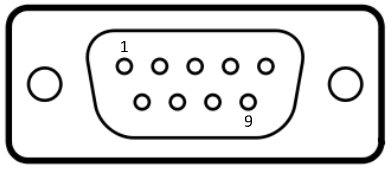
Рисунок 16 - интерфейс db-9
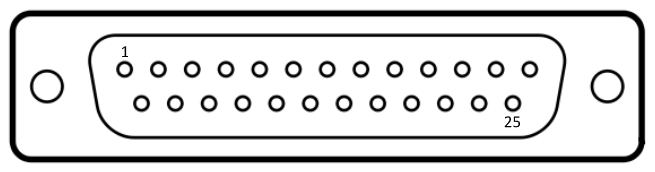
Рисунок 17 - интерфейс db-25
Таблица 3 - Формат пакета MS-Mouse
Бит
D6
D5
D4
D3
D2
D1
D0
1-й байт
1
LB
RB
Y7
Y6
Х7
Х6
2-й байт
0
Х5
Х4
ХЗ
X2
X1
X0
3-й байт
0
Y5
Y4
Y3
Y2
Y1
Y0
Таблица 4 - Формат пакета PC-Mouse
Бит
D7
D6
D5
D4
D3
D2
D1
D0
1-й байт
1
0
0
0
0
LB
MB
RB
2-й байт
X7
X6
X5
X4
X3
X2
X1
X0
3-й байт
Y7
Y6
Y5
Y4
Y3
Y2
Y1
Y0
4-й байт
Совпадает с байтом 2
5-байт
Совпадает с байтом 3
Встроенные выделенный порт мыши
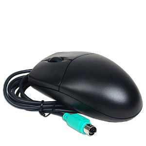
PS/2-Mouse – мышь, появившаяся с компьютерами PS/2. Её интерфейс и
разъём 6-pin mini-DIN аналогичен клавиатурному. Контроллер и
разъём PS/2-Mouse устанавливаются на современных системных платах
формата ATX. Мышка подулючается к соответствующему порту через
разъём 6 mini-DIN. Чаще всего используется комбинированный порт
PS/2, позволяющий подулючать сышку как с послежовательным
интерфейсом, так и с портом PS/2.
Контроллер такой мыши может входить в контроллер клавиатуры 8042.
Контроллер PS/2-Mouse может быть и на карте расширения (ISA), и
занимать дополнительные адреса в пространстве ввода/вывода.
Для PS/2-Mouse использует прерывание IRQ12 (шестнадцатиразрядное)
и адреса порта ввода-вывода 60h и 64h.
С PS/2-Mouse связь двусторонняя: процессор может посылать
контроллеру 8042 специальные команды через порт 60h, но перед
записью каждого байта (и команды, и параметра) в порт 64h должен
записываться код D4h.
Мышь может работать в одном из трёх режимов:
потоковый режим (stream mode) – мышь посылает данные по любому
изменению состояния
режим опроса (remote mode) – мышь передаёт данные только по
запросу процессора
диагностический режим (wrap mode) – мышь возвращает эхом данные,
посылаемые ей контроллером
PS/2-Mouse имеет поддержку BIOS, обеспечивающую настройку
параметров мыши (посылку вышеперечисленных команд). Драйвер мыши
(обработчик прерывания по вектору 74h от запроса IRQ12),
обрабатывающий её информационные посылки, входит в состав OC или
загружается отдельно.
С интерфейсами Serial Mouse и PS/2-Mouse иногда возникают
недоразумения. Хотя оба они последовательные, но имеют
существенные принципиальные различия в уровнях сигналов, способе
синхронизации, частоте и формате посылок:
интерфейс PS/2 использует однополярный сигнал с уровнями ТТЛ,
питание мыши - однополярное с напряжением +5 В относительно шины
GND. Интерфейс RS-232C, применяемый в Serial Mouse, использует
двуполярный сигнал с уровнями срабатывания +3 В и -3 В, и для
него требуется двуполярное (относительно шины GND) питание мыши.
интерфейс PS/2 использует две раздельные сигнальные линии, одну
для передачи данных, другую - для сигналов синхронизации. Serial
Mouse использует асинхронный способ передачи данных всего по
одной линии.
Даже не рассматривая частоты и форматы посылок, становится ясно,
что прямой совместимости между этими интерфейсами быть не может.
Тем не менее выпускаются и продаются переходники (пассивные!),
позволяющие выбирать способ подключения мыши.
Эти переходники предназначены только для универсальных мышей, у
которых встроенный контроллер по напряжению питания способен
распознать, к какому интерфейсу его подключили, и установить
соответствующий тип своего выходного интерфейса. Универсальные
мыши не особо распространены, поэтому часто приходится слышать о
неудачных попытках применения таких переходников к обычным
Serial Mouse или PS/2-Mouse.
Рисунок 18 и таблица 5 - Разъем PS/2
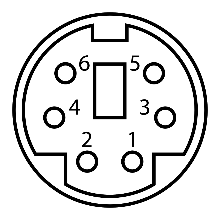
Контакт
Обозначение
Описание
1
+DATA
Передаваемые данные
2
(DATA2)
3
GND
Общий вывод для питания
4
Vcc
Используется для подачи питания на подключаемое устройство
5
+CLK
Синхронизация (Clock). Включается при передаче данных
мышью
6
(CLK2)
Беспроводные мыши
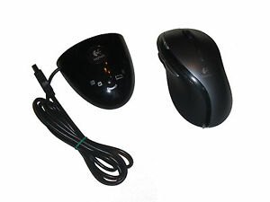
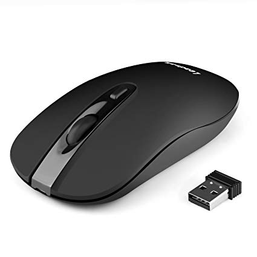
Рисунок 19 и 20 - Беспроводные мыши
Беспроводные мыши (Cordless Mouse) используют передачу данных в
радио- или инфракрасном диапазоне волн на расстоянии 1,5 – 2 м
интерфейсному блоку (приёмнику сигнала – подключается к порту PS/2
или USB).
Такие мыши оборудуются аккумулятором или батарейкой, которые
необходимо периодически заряжать или менять. Есть модели, которые
способны подзаряжать аккумулятор при их установке на время
неиспользования в док-блок, подключенный к интерфейсу USB
(одновременно являющийся и приёмником сигнала).
Инфракрасный сигнал не проникает сквозь предметы, поэтому приемник
сигнала должен быть всегда в поле зрения мыши. Также важен угол
между осью приёмника и осью передатчика (около 30-40 градусов по
вертикали и около 150 градусов по горизонтали). Приёмник сигнала
обычно подулючается к порту PS/2.
Мышь работающая в радиодиапазоне, во избежание интерференции может
использовать не один (до четырёх) частотный канал. Для неё нет
необходимости обеспечивать прямую видимость с приёмником сигнала –
он может находиться в любом удобном месте.
Драйверы для компьютерных мышек
Драйверы мыши - это файлы .inf (например, msmouse.inf), которые
содержат набор инструкций, которые сообщают компьютеру, какие файлы
или программы следует использовать для мониторинга этих сигналов, и
что означают сигналы при их отправке. Драйверы также содержат файлы,
которые сообщают компьютеру, как подключена мышь.
На сегодняшний день существует множество мышей для использования с
компьютерами. Также существует много производителей мышей. Обычно
каждый производитель разрабатывает определенный файл драйвера для
каждого типа мыши, которую они производят; особенно если у него
больше компонентов, чем у основного колеса прокрутки и двух кнопок.
Драйверы мыши немного отличаются от драйверов для других устройств
тем, что они часто встроены непосредственно в операционную
программу. Например, нет необходимости использовать отдельные
драйверы мыши с Windows (если они не содержат специальных или
необычных функций).
Операционные системы часто предоставляют файлы, потому что мышь
является основной неотъемлемой частью системы. Представьте, что вы
загружаете операционную систему без использования мыши, а затем
загружаете драйверы мыши, чтобы вы могли использовать мышь. Если
операционная система предоставляет драйверы для мыши вместе с
системой, после установки операционной системы мышь готова к
использованию.
Поскольку драйвер базовой конфигурации мыши поставляется с
большинством операционных систем, редко появляется сообщение об
ошибке, которое напрямую связано с мышью. Однако поврежденные или
отсутствующие драйверы мыши обычно приводят к тому, что мышь просто
не функционирует или функционирует беспорядочно. В этом случае
необходимо загрузить последнюю версию драйвера мыши с веб-сайта
производителя.
Основные характеристики при покупке:
Общее количество кнопок
Количество программируемых кнопок
Хват (для правой/левой/гибрид руки)
Тип подключения(радио(ИК)/проводной)
Интерфейс подключения
Длина кабеля(м)/Радиус действия (м)
Питание (по шине/аккумулятор (зарядка по USB)/батареи типа AA/AAA)